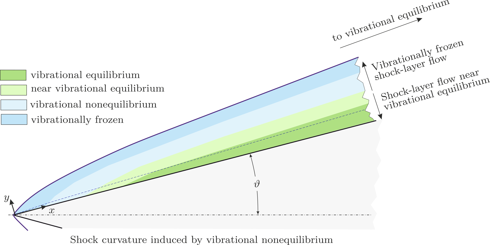

Research
My research focused on understanding how air flowed around hypersonic vehicles during high-speed, low-altitude flight. At these extreme conditions, the behaviour of airflow became complex and critically important for vehicle design.

Hypersonic Boundary-Layer Transition
The core of my PhD work explored what happened when smooth, laminar airflow suddenly became chaotic and turbulent around hypersonic vehicles. This transition dramatically affected how much heat was transferred to the vehicle's surface, a crucial factor in designing heat shields and ensuring crew safety.
I used a combination of Linear Stability Theory and Direct Numerical Simulation to investigate special types of instabilities called Mack modes. These were waves that grew in high-speed flows and could trigger the transition to turbulence. This was particularly challenging because, at hypersonic speeds, the air behaved differently under extreme temperatures and molecules began vibrating and even breaking apart.
Computational Methods
One of the central aspects of my research was extending an open-source computational tool called OpenSBLI to handle these extreme conditions. I developed capabilities to simulate scenarios in which air molecules were in various states of thermal and vibrational nonequilibrium, when the air could not keep up with rapid changes in temperature and pressure.
Key Discoveries
- Thermal effects mattered enormously: The way temperature was modelled in these flows significantly affected when and how transition occurred.
- Vibrational nonequilibrium delayed transition: When molecules could not vibrate fast enough to keep up with rapid temperature changes, this delayed the onset of turbulence.
- Design implications: These findings suggested that traditional models might have been overly conservative, potentially leading to heavier, more expensive vehicle designs.
This research had practical implications for the design of hypersonic vehicles, helping engineers better predict and manage the extreme thermal loads these vehicles experienced.
Thesis: doi:10.5258/SOTON/PG/T188